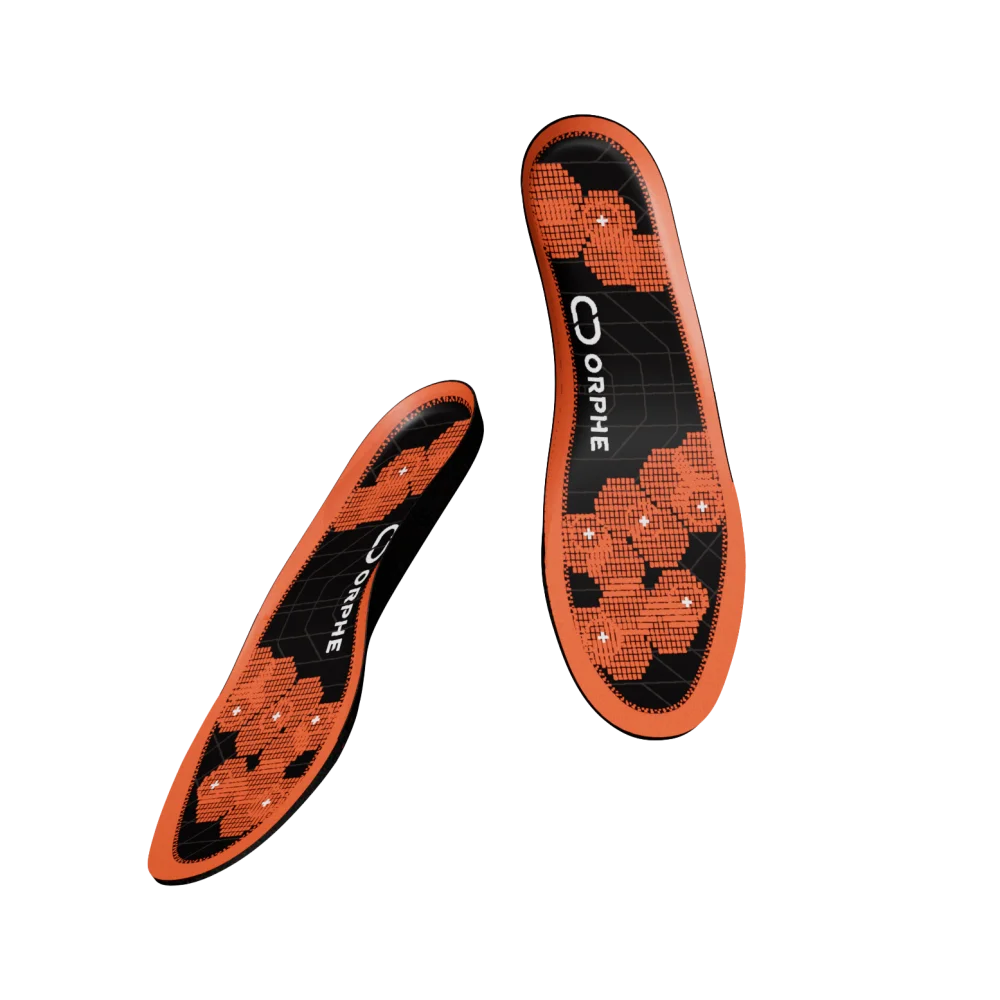

SENSING MODULE FOR SMART FOOTWEAR
ORPHE INSOLE
6チャネルの圧力センサとモーションセンサ（IMU）を内蔵したインソール型IoTセンサー。 足裏の荷重分布と足の動きを、最大200Hzでリアルタイムにワイヤレス取得できます。

このページは ORPHE INSOLE の製品紹介・データ理解・SDKの使い方が1つで分かるショーケースです。 実機が無くても歩行データのデモ再生ですべての図が動きます。実機（左右最大2台）を接続すると LIVE に切り替わります。
スペック & センサ構成
| モーションセンサ | 3軸加速度 + 3軸ジャイロ（クォータニオンはSDKで取得可能） |
|---|---|
| 圧力センサ | 片足 6点 |
| 加速度レンジ | ±16G |
| ジャイロレンジ | ±2000dps |
| 圧力レンジ | 0N – 148N |
| サンプリングレート | 100Hz / 200Hz（ストリーミングモードによる） |
| 接続 | Bluetooth 5.2（Web Bluetooth 対応） |
| 連続動作時間 | 24時間 |
| 充電 | マグネットコネクタ / ワイヤレス充電対応 |
| 重量 | 約87g（片足） |
| サイズ (US men) | 5, 5.5, 6, 8.5, 9, 9.5 |
※ ORPHE INSOLE (Beta) の公称値。アプリケーションにより変動する場合があります。
購入について
ORPHE INSOLE (Beta) は ORPHE Official Store の評価キットとして購入できます。 共同開発パッケージや研究・事業でのご利用は製品ページのお問い合わせフォームからご相談ください。
つないでみる
- 充電された INSOLE を用意する
- ページ上部のトグルスイッチをONにする（左右2台まで。1台でもOK）
- デバイス選択ダイアログで
ORPHE INSOLEを選ぶ
接続するとヘッダに実測周波数・L/R バッジ（装着位置から自動判定）・バッテリーが表示され、ページ内の左右パネルも実際の足に合わせて並び替わります。 ギアアイコンからデータストリーミングモードを切り替えられます。
| Mode | データ | 周波数 | 用途 |
|---|---|---|---|
| 1 | quat + gyro + acc | 200Hz | 姿勢のみ高速取得 |
| 3 | gyro + acc + press | 200Hz | 圧力＋IMUの高速取得 |
| 4 | gyro + acc + press + quat | 100Hz | 全データ（デフォルト） |
対応ブラウザ: Chrome / Edge / Opera（Web Bluetooth API が必要）。 Firefox / Safari では接続できませんが、このページの閲覧とデモ再生は可能です。
接続前の確認
- ORPHE INSOLE は動きを検知すると自動的にアドバタイズします。
- 反応しない場合は、軽く動かしてからブラウザのデバイス選択をやり直してください。
- 圧力値を見る場合は、ギアからモード3または4を選びます。
圧力センサ（6ch × 左右）
足裏の6点で荷重を計測します。足型マップでは値が大きいほど赤く表示され、 は6点の重み付き平均から計算した推定中心です。 左右2台を接続すると、体重移動・左右バランスがそのまま観察できます。
現在のモード(1)では圧力は配信されません — ギアからモード3/4へ全体圧力ゲージ
insole.gotPress = function (press) {
// press.values: [p0..p5] 6ch の ADC 生値 (uint16)
const total = press.values.reduce((a, b) => a + b, 0);
};値は ADC 生値です。荷重[N]などの物理量が必要な場合は、無負荷時・既知荷重時のサンプリングによる キャリブレーションをアプリ側で行ってください。チャネルの物理配置はモデルにより異なる場合があります。
IMU: 加速度・ジャイロ
3軸加速度（±16G）と3軸角速度（±2000dps）。gotAcc/gotGyro は -1..1 の正規化値、
gotConvertedAcc/gotConvertedGyro は実値（G / deg/s）を返します。下のチャートは実値です。
insole.gotConvertedAcc = function (acc) {
// {x, y, z} 単位: G
};
insole.gotConvertedGyro = function (gyro) {
// {x, y, z} 単位: deg/s
};姿勢: クォータニオン → 3D
センサ内部で融合計算されたクォータニオン（姿勢）を取得できます。下のCGは受信したクォータニオンを 左右それぞれの3Dモデルに適用したものです。実機をつま先上げ・かかと上げ・ひねりの方向に動かしてみてください。
現在のモード(3)ではクォータニオンは配信されません — ギアからモード1/4へinsole.gotQuat = function (quat) {
// {w, x, y, z}
};
insole.gotEuler = function (euler) {
// {pitch, roll, yaw} 単位: rad
};左右荷重分布の推定中心軌跡
左右それぞれ6点のADC生値から求めた推定中心を、荷重比で合成した30秒軌跡。
データ記録（CSV）
ストリーミング中のデータ（接続中の全デバイス）をCSVとして保存できます。列:
device, timestamp, serial_number, press0..5, acc_x/y/z[G], gyro_x/y/z[dps], quat_w/x/y/z, euler_pitch/roll/yaw[rad]
（モードにより配信されない列は空欄）。
保存したCSVは下の「CSVを読み込んでデモ再生」からループ再生でき、このページのデモ用歩行データとしても利用されます。
記録はライブ・デモどちらのデータでも可能です（デモ記録時はファイル名に demo が付きます）。
次のステップ
用途に合わせて他のexampleアプリも試してみてください。すべてこのリポジトリに同梱されています。
プログラムを自作する
独自アプリでは ORPHE-INSOLE.js を読み込み、ユーザー操作から begin() を呼びます。
このShowcaseのような接続UIごと使いたい場合は InsoleToolkit.js の buildInsoleToolkit() が便利です。
<script src="ORPHE-INSOLE.js"></script>
<script>
var insole = new OrpheInsole(0); // id: 0 or 1 (最大2台)
insole.setup(); // begin の前に必須
// ボタンクリック等のユーザー操作から呼ぶ
async function connect() {
await insole.begin('SENSOR_VALUES', {
streamingMode: 4, // 1 | 3 | 4
autoReconnect: true, // 切断時に自動再接続
});
}
insole.gotPress = function (press) {
console.log(this.id, press.values); // 6ch の ADC 生値
};
</script>実装の流れ
new OrpheInsole(id)でインスタンスを作る。setup()を呼び、ボタン操作などからbegin()で接続する。gotPress,gotConvertedAcc,gotConvertedGyro,gotQuatを必要に応じて実装する。- 接続UIも必要なら
buildInsoleToolkit()を使う。
購入・お問い合わせ
ORPHE のセンサー製品・スマートシューズは ORPHE Official Store で購入できます。
ORPHE INSOLE の評価キット・共同開発パッケージ、研究・事業でのご利用のご相談は
製品ページのお問い合わせフォームからご連絡ください。